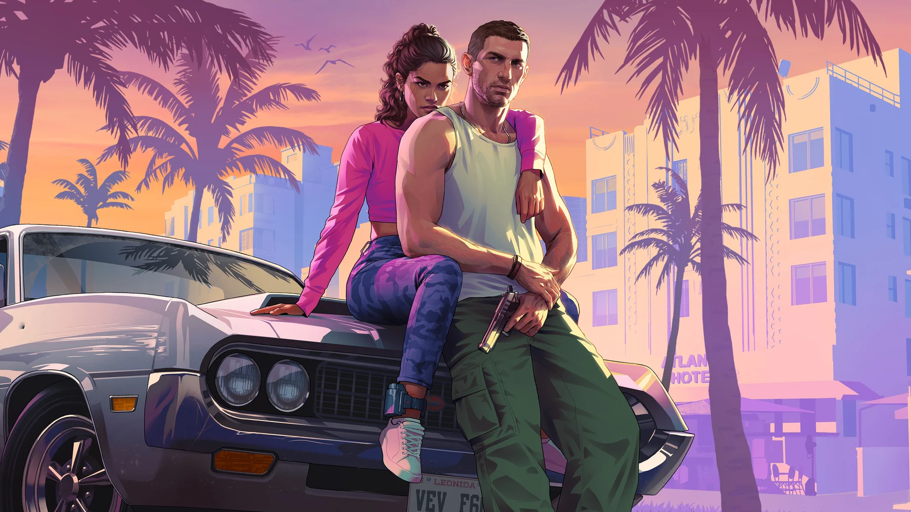

Una cronología de material oficial
Rockstar publicó el primer tráiler en diciembre de 2023, el segundo en mayo de 2025, una mirada extendida en agosto de 2026 y el tráiler de lanzamiento en octubre de 2026. Las fechas importan: un avance antiguo puede describir una fase anterior de promoción y no resolver cambios posteriores. Los vídeos y las páginas de Rockstar son la referencia para comprobar música, personajes y lugares que aparecen; las transcripciones de terceros pueden omitir contexto visual.
Lo que el montaje confirma
Los avances identifican a Jason y Lucia y presentan a Vice City y otras partes de Leonida. El material oficial resume la premisa como una aventura criminal donde una operación sale mal y ambos deben confiar el uno en el otro. Las imágenes muestran detalles del ambiente, del reparto y de la música. Es razonable describir lo que aparece en pantalla; hace falta más evidencia para asegurar que un plano representa una misión, una mecánica permanente o un punto de la cronología.

Detalles visuales: una lista verificable
Al detener un plano, anota el minuto y segundo, la versión del vídeo y una descripción neutral. Contrasta el nombre de una región con la página oficial, especialmente si el texto aparece en una pantalla o cartel. Un objeto repetido podría ser decoración, pista o coincidencia. Separar la captura de la interpretación ayuda a que otras personas puedan comprobar el análisis y evita elevar un simple parecido a “secreto confirmado”.
Música y tono
Rockstar ha vinculado música licenciada y piezas originales a sus vídeos, y anunció que Justice participa en la banda sonora y en la música del tráiler de lanzamiento. La canción seleccionada condiciona la percepción del ritmo, pero no demuestra cómo se jugará cada misión. Para acreditar una canción o autor, enlaza el anuncio oficial correspondiente en vez de deducirlo de un clip repostado o una lista no verificada.
Cómo filtrar teorías y spoilers
Una teoría gana solidez cuando explica la observación, cita el fotograma y contempla otras lecturas. Sigue siendo teoría hasta que el juego o Rockstar la confirme. Después del estreno, algunos análisis adelantan escenas; el título y la miniatura de una página deben avisar de spoilers de manera visible. Esta guía se limita al material promocional para que el lector pueda volver a él sin recibir una sinopsis de la campaña.
Una rutina reproducible para analizar fotogramas
Haz una lista de observaciones con minuto y segundo exactos, y conserva el enlace al video original en vez de una copia recortada. Describe primero lo visible: por ejemplo, un cartel, un vehículo o un cambio de luz. Después escribe la hipótesis como pregunta. Para comprobarla, revisa si Rockstar identifica el objeto en una página, captura o secuencia posterior. La rutina separa análisis visual de teorías y permite que otra persona repita el hallazgo sin confiar en una captura viral.
Tráiler, gameplay y captura promocional
Un tráiler de lanzamiento puede usar montaje, cámara y música que no existen de esa forma durante el juego. Un video extendido quizá se acerque más a una demostración, pero también selecciona escenas y omite interfaces. Comprueba si el editor identifica el material como captura de juego y si lleva una nota sobre hardware o edición. Esta distinción es esencial para hablar de fidelidad visual, rendimiento y mecánicas sin prometer una experiencia idéntica a cada jugador.
Atención a música y derechos
El soundtrack puede cambiar entre regiones y servicios debido a licencias. Si reconoces una canción, consulta el crédito oficial antes de atribuirla a un artista; versiones de redes pueden reemplazar audio por derechos de autor. Rockstar anunció participación de Justice en el score y en el tráiler, dato que tiene una fuente concreta. No confundas una canción promocional con la selección completa de estaciones de radio del juego.
Una plantilla breve para publicar un análisis
Al redactar una observación, empieza con una línea de contexto: video oficial, versión o fecha, y minuto del plano. Sigue con lo que se ve sin interpretación y después plantea la lectura como posibilidad. Añade una captura propia solo si está permitida y no rompe derechos de terceros; un enlace al video suele bastar. Cierra con lo que todavía no puede comprobarse, como si el objeto se usa en una misión o aparece como decoración. Este formato hace que la pieza sea fácil de revisar y reduce errores en actualizaciones. Si el juego confirma una hipótesis, edita el texto y deja visible la fuente nueva en vez de presentar la teoría antigua como prueba desde el principio.
En resumen
Los tráilers son una puerta al universo del juego, no una hoja de especificaciones. Puedes revisar la cronología oficial junto con nuestras guías de personajes y ubicaciones para contextualizar cada escena.
Preguntas frecuentes
¿Cuántos tráilers oficiales hay?
Rockstar mantiene el primer y segundo tráiler, la mirada extendida y el tráiler de lanzamiento en su página oficial.
¿Un detalle de tráiler confirma una mecánica?
No siempre. Una escena promocional no documenta por sí sola un sistema jugable.
¿Dónde ver el tráiler de lanzamiento?
En la página de GTA VI y en el canal oficial de Rockstar Games.
¿Este análisis contiene spoilers?
No describe giros de la campaña; se centra en material promocional.
Fuentes y lecturas
Consulta la fuente original cuando exista y su fecha; los anuncios, el catálogo y las guías de terceros pueden cambiar.